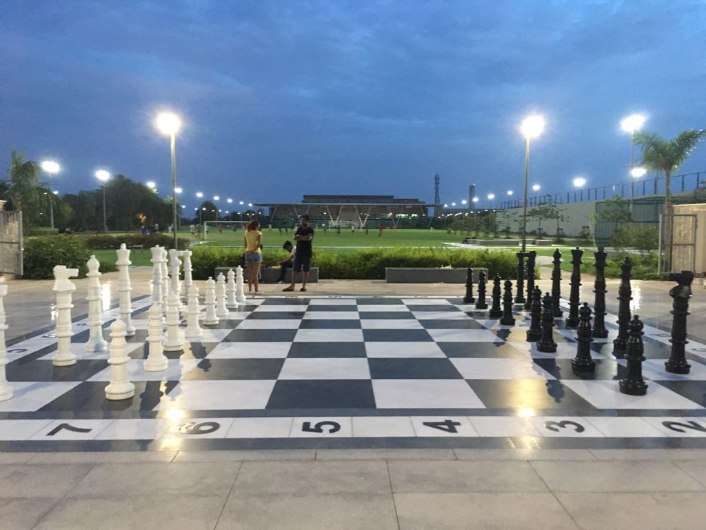
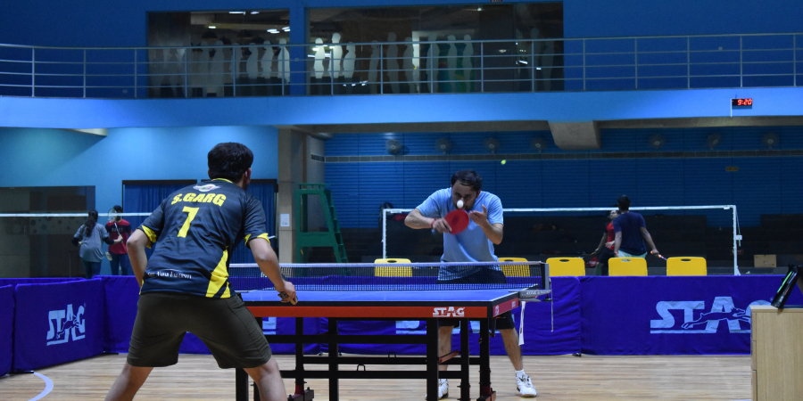
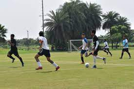
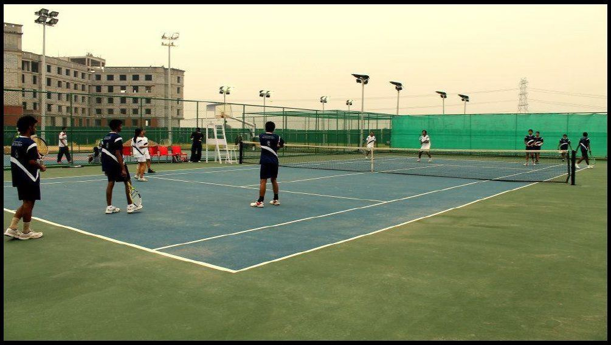
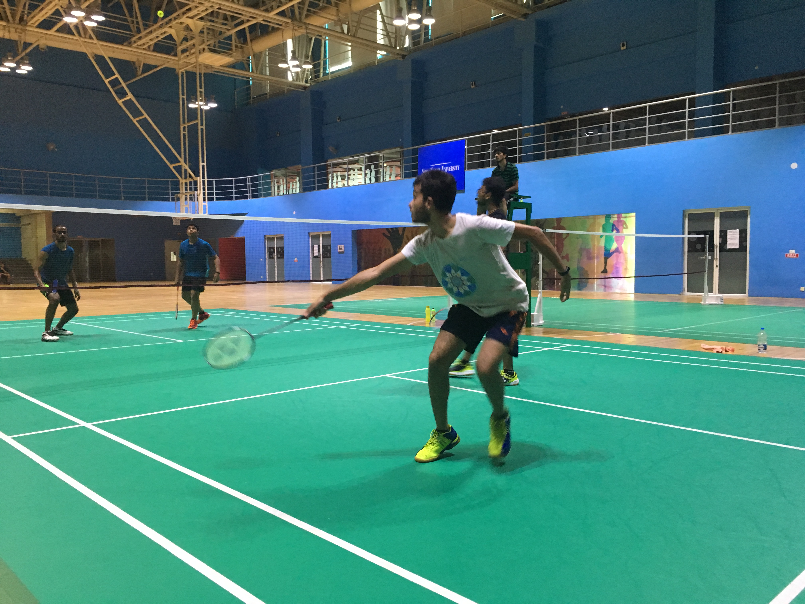
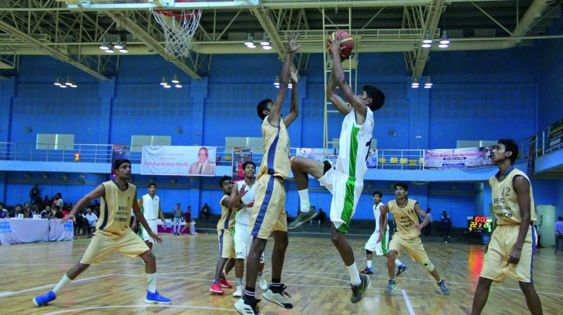
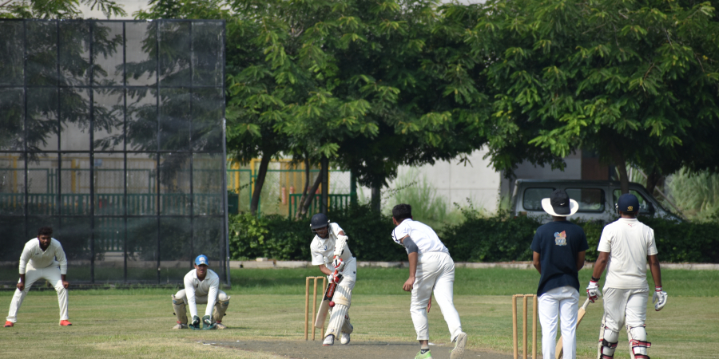
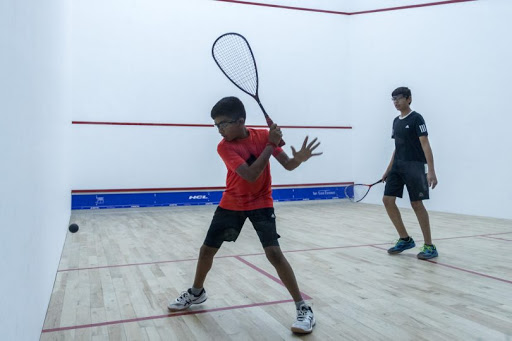

Chess
Chess is a recreational and competitive board game played between two players.
Today, chess is one of the world's most popular games, played by millions of people worldwide at home, in clubs, online, by correspondence, and in tournaments.
Chess is an abstract strategy game and involves no hidden information.

Table Tenis
Table tennis, also known as ping-pong and whiff-whaff, is a sport in which two or four players hit a lightweight ball, also known as the ping-pong ball, back and forth across a table using small rackets. The game takes place on a hard table divided by a net.
Players must allow a ball played toward them to bounce one time on their side of the table and must return it so that it bounces on the opposite side at least once.

Football
Football is a family of team sports that involve, to varying degrees, kicking a ball to score a goal. Unqualified, the word football normally means the form of football that is the most popular where the word is used.

Table Tennis
Tennis is a racket sport that can be played individually against a single opponent or between two teams of two players each.
Each player uses a tennis racket that is strung with cord to strike a hollow rubber ball covered with felt over or around a net and into the opponent's court.

Badminton
Badminton is a racquet sport played using racquets to hit a shuttlecock across a net. Although it may be played with larger teams, the most common forms of the game are "singles" (with one player per side) and "doubles" (with two players per side).
Badminton is often played as a casual outdoor activity in a yard or on a beach; formal games are played on a rectangular indoor court.
Points are scored by striking the shuttlecock with the racquet and landing it within the opposing side's half of the court.

Basketball
Basketball is a team sport in which two teams, most commonly of five players each,
opposing one another on a rectangular court, compete with the primary objective of shooting a basketball
through the defender's hoop while preventing the opposing team from shooting through their own hoop.

Cricket
Cricket is a bat-and-ball game played between two teams of eleven players on a field
at the centre of which is a 22-yard (20-metre) pitch with a wicket at each end, each comprising two
bails balanced on three stumps. The batting side scores runs by striking the ball bowled at the
wicket with the bat (and running between the wickets), while the bowling and fielding side tries to
prevent this (by preventing the ball from leaving the field, and getting the ball to either wicket) and
dismiss each batter (so they are "out").

Squash
Squash is a racket and ball sport played by two players in a four-walled court with a small, hollow rubber ball. The players alternate in striking the ball with their rackets onto the playable surfaces of the four walls of the court.
The objective of the game is to hit the ball in such a way that the opponent is not able to play a valid return.